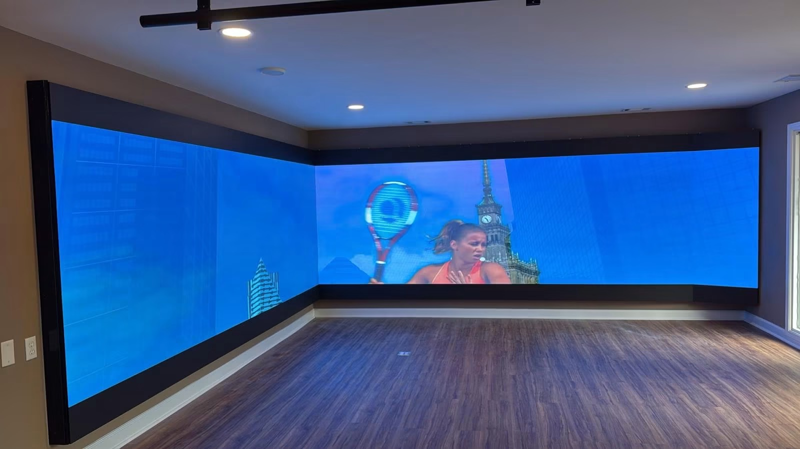

Two suppliers can quote the same screen size and land tens of thousands of dollars apart, and neither quote is necessarily wrong. LED display pricing reflects a chain of decisions about pixel pitch, component grade, cabinet material, certification, and service, and each decision has a cost consequence that the headline number conceals.
This guide explains how LED display pricing is actually built, which factors move the number the most, and how a US importer should read a quotation so that two offers can be compared fairly. It does not publish specific prices, because a meaningful figure depends on the project, but it gives buyers the structure they need to interrogate any quote they receive.
LED screens are priced per square metre of screen area, and the type of screen sets the starting band. The categories below reflect genuine cost differences driven by components and manufacturing complexity, not by marketing position. Understanding the band a product belongs to explains most of the variation between quotes before any project detail is added.
Indoor standard displays sit in the entry band. They use conventional SMD packaging, a straightforward cabinet, and standard drivers. Indoor premium displays, particularly COB products, sit higher because the manufacturing process is more complex and the resulting surface reaches contrast ratios around 10000:1. Rental screens occupy a middle band, with the cost driven by cabinet engineering for repeated assembly rather than by pixel density.
Outdoor fixed displays sit in a higher band again, because weatherproofing to IP65, brightness above 8000 nits, and thermal design all add material and process cost. Transparent displays are in the upper band, since the manufacturing process for a see-through panel is more specialised and volumes are lower than for conventional cabinets.
The right way to read the table below is as a relative map. It shows which product family costs more than another and why, so that a buyer can tell whether a quote is plausible for the category rather than whether it beats a competitor's number.
| Display Type | Typical Pitch Range | Relative Cost Position | What Drives The Cost | Best For |
|---|---|---|---|---|
| Indoor standard | P2.6 to P3.9 | Entry band | Conventional SMD packaging and standard drivers | Commercial signage, lobbies, retail |
| Indoor premium COB | P0.9 to P1.9 | Upper band | COB manufacturing process and higher contrast surface | Boardrooms, control rooms, luxury retail |
| Rental LED screens | P2.6 to P3.9 | Middle band | Cabinet engineering for repeated assembly and transport | Events, concerts, exhibitions |
| Outdoor fixed | P4 to P10 | Upper band | IP65 sealing, high brightness, thermal design | Billboards, stadiums, facades |
| Transparent LED | P3.9 to P10 | Upper band | Specialised panel process and lower production volume | Storefront windows, architecture |
Pixel pitch is the single largest cost variable. Halving the pitch roughly quadruples the number of LEDs and driver channels on the same area, and it increases the processing, power, and testing burden as well. Because viewing distance sets the pitch a project actually needs, overspecifying pitch is the most expensive mistake a buyer can make.
Cabinet material is the second factor. Die-cast aluminium cabinets cost more than steel but weigh significantly less, which reduces freight, structure, and installation cost. On a large screen or a facade where weight is constrained, the cheaper cabinet can end up costing more once the supporting structure is priced.
Driver and control components are the third. Branded driver ICs and known control systems add a modest percentage to the bill, and they pay for it in colour consistency, refresh stability, and easier support. For any screen that will be filmed or that runs critical content, that premium is usually the difference between a screen that works and one that needs constant attention.
Certification is the fourth factor, and for US buyers it is not optional. Commercial installations require UL or ETL listing, and obtaining it adds cost to the factory price. A quote that omits certification is not a cheaper quote; it is an incomplete one that will need to be revisited before the screen can be installed legally.
Order volume and customization round out the picture. Larger orders reduce the per-unit cost because tooling and setup are amortised across more cabinets, while custom cabinet sizes or unusual pitch values add engineering time. The table below summarises each factor and the question a buyer should ask about it.
| Factor | How It Moves Cost | What To Ask The Supplier |
|---|---|---|
| Pixel pitch | Finer pitch raises LED count, driver channels, power and testing load | What pitch does my nearest viewing distance actually require? |
| Cabinet material | Die-cast aluminium costs more up front but reduces freight and structure | What is the cabinet weight per square metre? |
| Driver and control brand | Branded ICs and known systems add a modest premium | Which driver ICs and control system are included? |
| Certification | UL or ETL listing adds cost to the factory price | Is UL or ETL included, and for which cabinet series? |
| Order volume | Larger orders reduce per unit cost through amortised setup | What is the price at my volume and at the next volume tier? |
| Customization | Non-standard cabinet sizes or pitch values add engineering time | Is a standard cabinet size available for my screen geometry? |
| Brightness requirement | Higher nits raise component cost and power draw | What brightness is needed for my ambient light conditions? |
| Service access | Front and rear access adds cabinet complexity | Is front service access available for this series? |
The factory price is only one line in a US importer's total cost, and on a delivered project it is often not the largest. Freight, duty, brokerage, certification, installation, and commissioning all sit between the ex-works price and a working screen, and a buyer who compares only the ex-works number is comparing the wrong figure.
Freight is the most visible additional cost and the one with the most variables. Sea freight is far cheaper per cubic metre than air freight but adds weeks to the timeline, and the choice interacts with the project schedule. Cabinet volume and weight, not screen area, determine what the container carries, which is another reason cabinet material matters to the total.
Import charges add a further layer. US Customs duty, merchandise processing fees, and the cost of a customs broker all apply, and the classification of the goods determines the rate. Buyers should confirm the correct tariff classification before ordering rather than discovering it at the port, because a reclassification after arrival is expensive and slow.
On the destination side, structural work, rigging or lifting equipment, electrical supply, and installation labour frequently exceed the screen cost on a complex site. Those costs are also the easiest to underestimate, because they depend on the building rather than on the product. The table below sets out the categories a US importer should model before comparing supplier quotes.
Comparing Asia Vision with other suppliers is most useful when the comparison is made on specification rather than on headline price. Two quotes for a P3.9 outdoor cabinet can differ because one includes IP65 sealing, branded drivers, and UL listing while the other does not. The lower number is only cheaper if the specification is genuinely equivalent.
The most reliable way to compare is to normalise the quotes. Ask each supplier for the same pitch, the same brightness, the same IP rating, the same driver and control brand, the same certification, and the same warranty, then compare. This is the only method that reveals which supplier is actually offering more for the money.
Beyond the unit price, the factors that shift lifetime cost are service access, spare parts availability, and warranty terms. A screen that can be serviced from the front costs less to maintain over a decade than one that requires rear access, and a supplier that stocks spare parts shortens every future repair. Those advantages rarely appear in a price comparison and frequently decide the total cost of ownership.
Asia Vision Technology manufactures across the full range of indoor and outdoor products, which means a buyer can source an entire project from one supplier and keep spare parts, control systems, and service procedures consistent. The table below sets out the dimensions a buyer should compare between suppliers and what to verify in each.
| Comparison Dimension | Asia Vision Position | What To Verify With Any Supplier |
|---|---|---|
| Brightness | 8000+ nits on outdoor D-PRO series | Is the quoted figure a typical or a peak value? |
| IP rating | IP65 front and rear on outdoor series | Is IP65 specified for both front and rear? |
| Refresh rate | 3840 Hz indoor, 1920 Hz and above outdoor | Is the figure sustained across all greyscale levels? |
| Warranty | 3 years standard | What does the warranty exclude in practice? |
| Service access | Front and rear on rental and outdoor series | Can modules be replaced from the front? |
| Certification | CE, FCC and RoHS with UL or ETL for US | Is the listing issued for the exact cabinet model? |
| Lead time | 15 to 20 working days for production orders | Is the quoted lead time from order or from deposit? |
| Spare parts | Supplied alongside the original order | Which parts should be held on site, and over what horizon? |
For this requirement our range covers it directly: the RH-PRO fine-pitch COB (flagship, full redundancy) and the COB CV-PRO series (Ultra-HD fine pitch).
Send your specifications for a detailed LED display price quote with UL/ETL certification.
Request Price Quote Chat on WhatsApp